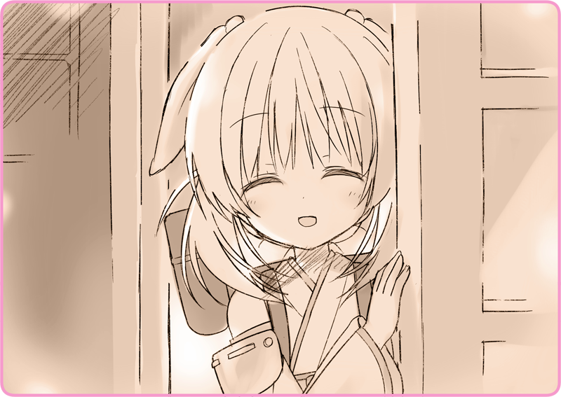

Trùm kín đầu bằng chiếc khăn choàng cổ, cô giữ mình bất động trong bóng tối, cố nén nhịp thở.
Tại căn phòng chỉ có ánh trăng soi chiếu.
Thi thoảng cô lại nghe thấy tiếng pháo hoa đằng xa, nhấp nháy ít giây rồi vụt tắt.
Hơi thở cô hóa một màu trắng xóa, song chẳng phải là cô không thể chịu được cái lạnh.
Một Hình nhân ngồi lặng thinh trên chiếc xe lăn đặt cạnh cô.
Lilia đang trú ẩn sát bên phòng khách, chờ thời gian trôi qua.
Nơi này thoang thoảng mùi dầu, trên bàn có hằng hà sa số dụng cụ nằm la liệt, và trên tường thì treo biết bao nhiêu là thiết bị đo đạc chẳng rõ để làm gì. Có thể đây là phòng bảo trì cho cô bé đó— Haizakura. Chiếc áo khoác cởi ra bị vứt tùy tiện lên ghế. Trên vai áo có thể quan sát thấy một cái huy hiệu.
[... các bác vất vả quá, phải làm việc cả vào ngày này~]
[... ừ, xin lỗi cháu gái nhé. Ừm, trà ngon thật đấy…]
Một luồng sáng yếu ớt chiếu vào từ căn phòng bên cạnh, lâu lâu lại nghe cả tiếng cười nữa. Tưởng chừng Haizakura sẽ từ chối mấy viên cảnh sát từ ngoài cửa luôn, không ngờ em lại cho họ vào phòng và mời cả trà ấm. Rốt cuộc là em tính làm gì…
[... vậy, lần sau tiến sĩ Tohma có nhà thì bọn bác lại đến nhé. Cảm ơn cháu…]
Sau những phút giải lao đáng đồng tiền bát gạo, toán cảnh sát rời phòng.
Không gian tạm trở nên yên ắng, tiếp đến là tiếng pháo hoa. Và rồi…

Em mở hé cửa và mỉm cười với Lilia. Cách em the thẽ nói “Ổn rồi đó” nghe thật vui tai.
“May quá… họ có hỏi gì cậu không?”
Thở ra một hơi vì an tâm, cô trở lại phía trước lò sưởi, cảm tưởng như ánh lửa đã làm tan chảy đến tận cõi lòng mình.
“Tiến sĩ Tohma là ai thế?”
Hình nhân nào cũng phải có một
chủ nhân để có thể đưa ra chỉ đạo và quản lý họ. Họ phục tùng tuyệt đối mệnh lệnh của chủ nhân, và không được phép tự ý hành động.
“... Cậu chứa chấp tớ thế này liệu có ổn không?”
“Thì là, chủ nhân cậu liệu có nổi giận với cậu không?”
“Thì đúng là thế, cơ mà…”
Em nhoẻn cười, một nụ cười tỏa nắng.
Cô cảm thấy mình giống một con ngốc khi đã lo lắng thái quá.
“Cảm ơn, cho tớ xin cốc…”
Một mùi hương dịu nhẹ. Chút trà ấm đã giải đi sự hanh khô trong cổ họng cô.
＊ ＊ ＊
“Tớ ấy, chẳng còn chốn dung thân nữa rồi.”
Pháo hoa đã hết tự lúc nào.
Trong căn phòng tranh tối tranh sáng, mắt nhìn chăm chăm vào chiếc lò sưởi, Lilia lựa chọn từ ngữ mà bày tỏ lòng mình.
“Sau khi đã đem con bé đi, tớ chẳng thể nào trở lại đoàn kịch nữa.”
“... Tớ sẽ tới chỗ ba mẹ. Đã bao nhiêu năm tớ không được gặp họ rồi.”
“Ở Lobelia.”
Haizakura chớp mắt ngạc nhiên trước những lời ấy.
“Làm gì có chuyện đơn giản như thế chứ.”
Haizakura chỉ vào một tấm bản đồ treo trên tường.
Chỉ cần đi tàu hỏa khoảng hai tiếng, rồi cuốc bộ độ một ngày đêm qua rừng là đến được nơi rồi.
“Đang chiến tranh đó. Làm sao qua bên kia biên giới được.”
Em vỗ tay tựa hồ đã hiểu. Chẳng rõ cô bé này có biết gì về thế sự không nữa.
“Tới khu tô giới
[1], rồi từ đó lên thuyền. Sau đó tị nạn về Lobelia… hiện tại thì đó là con đường duy nhất dành cho tớ rồi.”
“Phải rồi, đấy là nếu… tớ có tiền…”
Tới tô giới, xin thị thực, rồi lên một con thuyền gần như là đi vòng quanh thế giới. Liệu sẽ tiêu tốn biết bao nhiêu tiền chứ? Lilia chẳng thể nào hình dung nổi.
“Chắc sẽ không đủ đâu. Nếu không đi kiếm thì…”
“Kiểu đi làm việc, hay bán đồ này nọ…”
Nom như đã ngộ ra điều gì đó, Haizakura gật đầu lia lịa.
“Sao thế?”
＊ ＊ ＊
Sau một đêm, bầu trời xanh một lần nữa lại trải dài bất tận.
Tuyết đã ngừng rơi, nhưng cảnh quan vẫn phủ trong gam màu bạc của tuyết.
Những làn hơi nước trắng không ngừng phun ra từ ống khói của Haizakura.
“C-Có ai không ạ…”
Trước mặt Lilia là một chiếc bàn nhỏ lôi từ trong phòng ra.
Đặt trên đó là một chồng cốc uống trà úp ngược và một lọ đường lớn.
Tờ quảng cáo viết lên mặt sau của tấm bản đồ, cho cảm giác như mới được làm ra cấp tốc đầy ngẫu hứng.
“... Này, Haizakura.”
[1] Tô giới là vùng đất thuộc chủ quyền của một quốc gia, nhưng do quốc gia hay thế lực khác quản lý.

 “Lilia-san, giờ ổn rồi đó.”
“Lilia-san, giờ ổn rồi đó.”